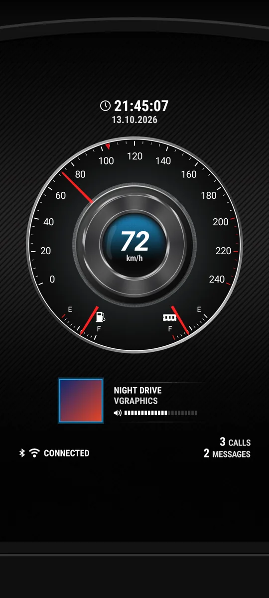

Speedometer Live Wallpaper
Your phone, as a car dashboard.


One dial, three jobs
Pick the mode in Settings, tap the gauge on your home screen, or use the Big gauge tile in Quick Settings, which switches it on every phone, Samsung's included. The digits above the needle show the same value.
 Mode 1
Mode 1Power
Watts going into the battery (to the right) or out of it (to the left, with a minus).
 Mode 2
Mode 2CPU clock
How fast the processor runs, as a share of its top speed. On phones that allow reading it.
 Mode 3
Mode 3GPS speed
Your speed in km/h or mph. A red mark shows the top speed of the current drive.
Classic, or Future
Open Designs in the app and swipe through them. Each preview is drawn by the wallpaper itself, at your phone's shape.
 Free
FreeClassic
The 2016 dashboard: the big gauge with signal and RAM behind its shoulders, Wi-Fi and battery below, four warning lights and an LCD clock.

€0.99, one timeFuture
The 2016 chrome cluster, rebuilt: one big dial with the same three modes, battery and RAM arcs, the clock and date, and the Bluetooth and Wi-Fi status.
- Your music on the dashboard. The song that's playing, its cover and the media volume, plus how many calls you missed and messages you haven't read. Turn on notification access for it in Android's settings; nothing it reads leaves your phone.
- Buy once, keep it. On a new phone with the same Google account, Future comes back by itself when you open the app.
- Big gauge tileAdd the Big gauge tile to Quick Settings to switch the dial's mode from anywhere. Its subtitle shows the mode it's in.
- Easy on the batteryNothing redraws unless something changed, and everything stops while the wallpaper is hidden.
- No ads on your wallpaperA small banner shows inside the app only, never on your home screen.
- Android onlyLive wallpapers are an Android feature, so there's no iPhone version.
-
The small gauge at the top left shows your mobile signal, from 0 to 4 bars.
More in the wiki → -
The small gauge at the top right shows how much of the phone's memory is in use.
More in the wiki → -
It shows one of three things: power, CPU clock or GPS speed (see the modes above). Tap it on your home screen, or use the Big gauge tile in Quick Settings, to switch. The digits above the needle show the same value.
More in the wiki → -
Four lights on the big gauge. Each one can be switched off in Settings.
- Low battery: at or below the low battery level, 15 % unless you change it.
- Bluetooth: while Bluetooth is on.
- High temperature: when the battery is hotter than 45 °C, unless you change it.
- Low temperature: when the battery is colder than 0 °C, unless you change it.
-
The LCD under the big gauge. The time format, date order, separators and seconds are all in Settings.
More in the wiki → -
The strength of your Wi-Fi signal. Under it, a status line reads CONNECTED (with the link speed in Mbps), NO NETWORK, MOBILE DATA or DISABLED. The ON light is green on Wi-Fi and yellow on mobile data.
More in the wiki → -
How full your battery is. The LOW light comes on at the low battery level, and the green bolt lights while the phone charges. The small dial shows the battery's temperature, from low (C) to high (H).
More in the wiki →
Your readings stay on your phone
Nothing the gauges read is sent anywhere. Your location is used only for the speed in GPS mode, and only while the wallpaper is on screen. Future's music, calls and messages are read on the phone and stay there.
Put the dashboard on your phone
Free on Google Play, for Android phones and tablets.